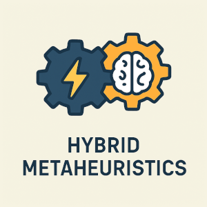
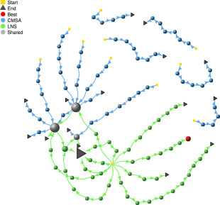
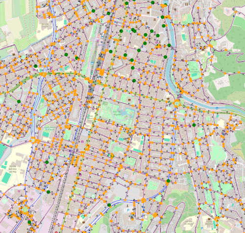

Research Interests
My research interests are twofold. On one side, I am interested in Swarm Intelligence, an artificial intelligence discipline inspired by the collective behaviour of social insects, flocks of birds, and fish schools. On the other side, I am also interested in the hybridization of metaheuristics with artificial intelligence and operations research methods, such as branch and bound techniques, dynamic programming, and (more recently) large language models (LLMs). Moreover, the graphical comparison and analysis of metaheuristics has gained more and more importance in my groups research objectives during the last years.
We design high-performance metaheuristics (and their hybrids) for solving challenging combinatorial optimization problems. Concerning applications, we focus especially on electric vehicle routing problems and on string problems from bioinformatics. Some of our recent research lines are outlined in more detail below.
Hybrid Metaheuristics

Hybrid metaheuristics are optimization methods that combine a metaheuristic with other techniques for optimization to exploit their complementary strengths for solving complex problems more effectively. My group has a long history in this line of research. A prime example is Construct, Merge, Solve, and Adapt (CMSA), a hybrid approach that tackles complex problems by iteratively combining solution construction with exact solving techniques. It works in four main steps: first,
Search Trajectory Networks (STNs)

Search Trajectory Networks (STNs) are a visualization technique (developed in cooperation with Dr Gabriela Ochoa and Dr Katherine M. Malan) that maps the search process of optimization algorithms onto a directed graph, where nodes represent visited solutions and edges capture transitions between them, enabling researchers to observe exploration patterns, convergence behavior, and robustness across problem instances. To make this approach more accessible and powerful, STNWeb was developed as a web-based platform that automates the generation and analysis of STNs, offering a user-friendly interface, advanced partitioning methods, and integrated explainability features (including LLM-based analysis), thereby transforming STNs from a specialized visualization tool into a widely usable platform for interpreting and comparing the behavior of metaheuristics.
Using LLMs in Metaheuristic Research
In recent years we examined two main ways of using LLMs in metaheuristics research: first, as pattern-recognition engines for algorithmic improvement, where LLMs are prompted with structured data (e.g., graph metrics and example solutions) or source code to discover heuristics, adjust parameters, and even propose meaningful modifications to metaheuristic implementations—thus boosting performance and making optimization more accessible to non-experts; and second, as interpretability aids, where LLMs are integrated into visualization tools like STNWeb to automatically generate natural-language explanations of search trajectory networks, helping researchers and practitioners better understand, compare, and analyze the behavior of metaheuristics.
Electric Vehicle Routing

In recent years we have focused on the modeling and the algorithmic solution of realistic electric vehicle routing variants, especially two-echelon and city-logistics settings, by (1) extending mathematical formulations to include EV-specific constraints (battery limits, partial recharging, time windows, simultaneous pickup-and-delivery and road-junction/road-type contraints), (2) producing benchmark datasets and an EVRP instance generator called EVRPGen to better represent real road networks, and (3) developing and testing tailored metaheuristics (e.g., Variable Neighborhood Search, CMSA/set-covering based approaches and adaptations of CMSA) that produce competitive computational results on these enriched problems.
Problem Instances
We frequently generate and provide problem instances for various combinatorial optimization problems to aid experimental evaluation.
Electric VRP with Road Junctions and Road Types
Instances used in our 2025 paper. Download
Group Shop Scheduling (GSS) Problem
Instances used in our 2003 paper. Download
K-Cardinality Tree (KCT) Problem
Instances used in our 2005 paper. Download
Longest Common Subsequence (LCS) Problem
Instances used in our 2009 paper. Download
Minimum Common String Partition (MCSP)
Instances from our 2016 paper and 2019 paper. Download Set 1 Download Set 2
Software
We occasionally provide C++ code/executables of our optimization software (compiled under Ubuntu 14.04).